Settings, Log weight and the metric pages were drawn by day and at night only. Here they are at dawn (06:30, the dawn keyframe) and dusk (19:45, Coach's dusk in CO2), fair sky. Each board takes ?t=dawn or ?t=dusk (shared night.js); day shots and the other night shots are byte-identical to before; Settings at night now shows the right sync times too.
Glass: both hours keep the white day glass and dark ink (g2.js, forced light, over all three screens' glass areas; dusk needs 32% either way, so the same look as the day wins). Dawn 22%, blue buttons. Dusk 34%, white buttons over the sky, blue ones on the glass, and the good/bad words darker (TR2's green and coral fell to 2.35 / 2.27 there).
| Measured (dd1/measure.json, floor 3.0, no veil) | dawn 06:30 | dusk 19:45 |
|---|---|---|
| Glass text, weakest | 3.49 | 3.18 |
| Sky text / number | 7.46 / 7.59 | 3.88 / 3.33 |
| Button vs the sky | blue 3.23 | white 3.14 |
| Green / coral on the card (TR2 band method) | #17703C 3.74 / #B23A2E 3.61 | #0E5A2C 3.19 / #8A2A20 3.30 |
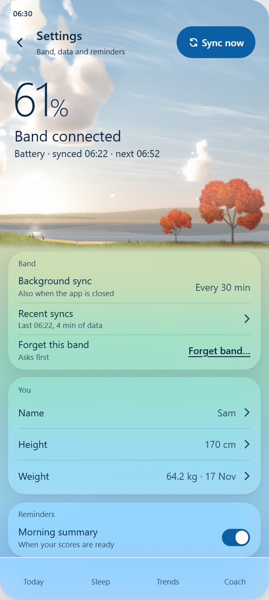
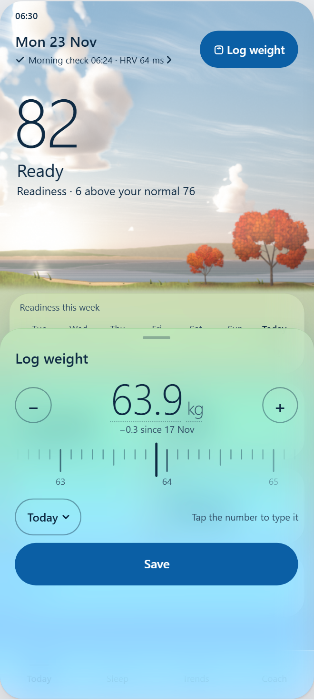
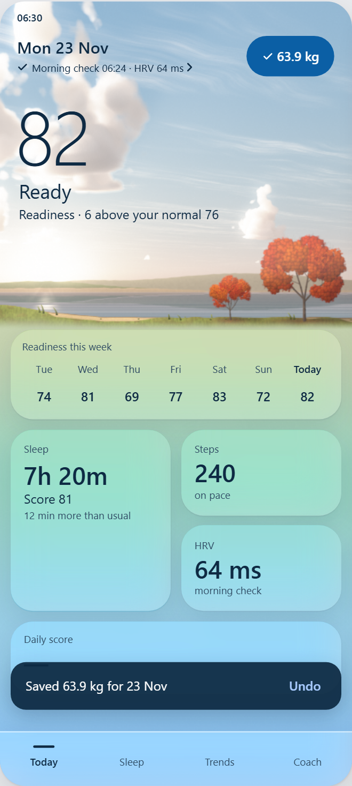
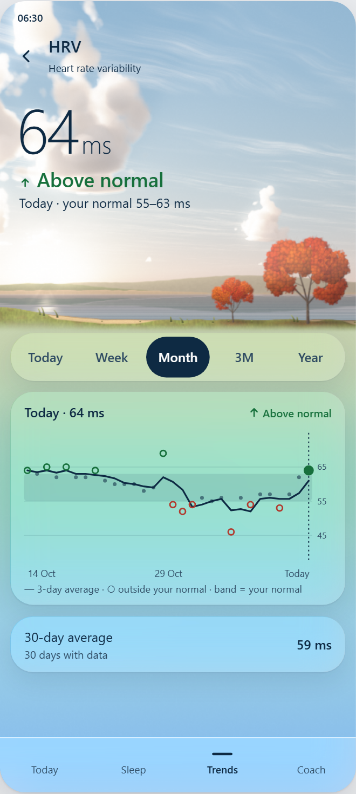
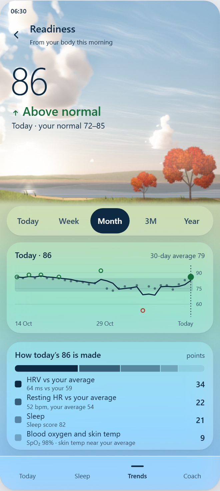
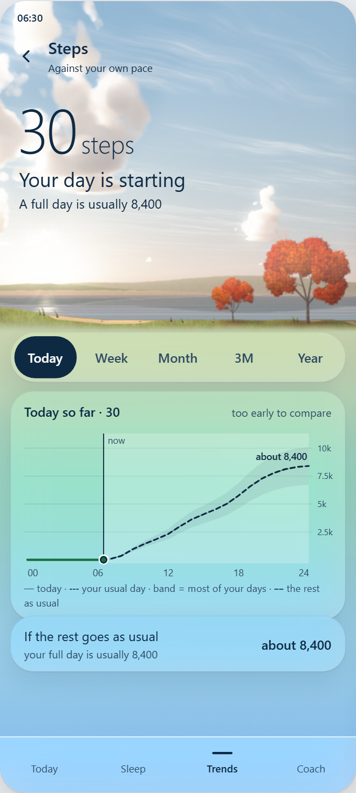
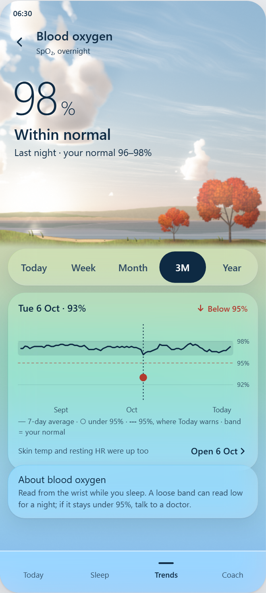
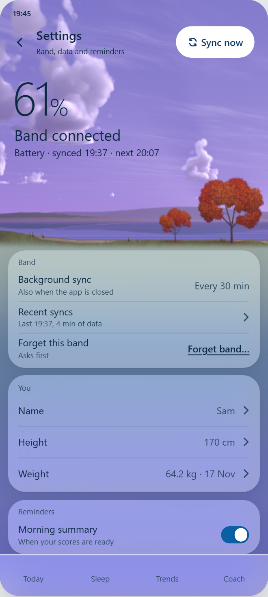
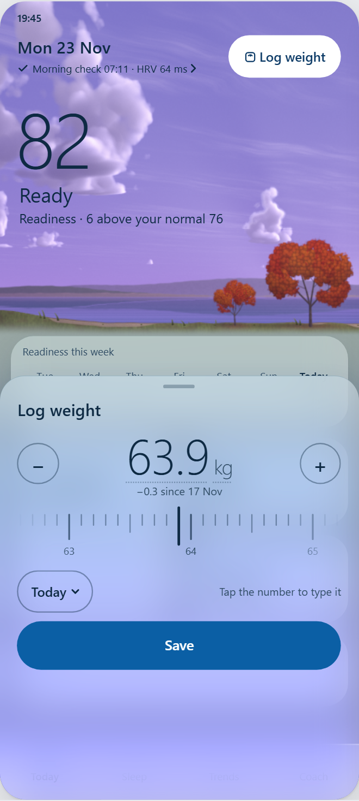
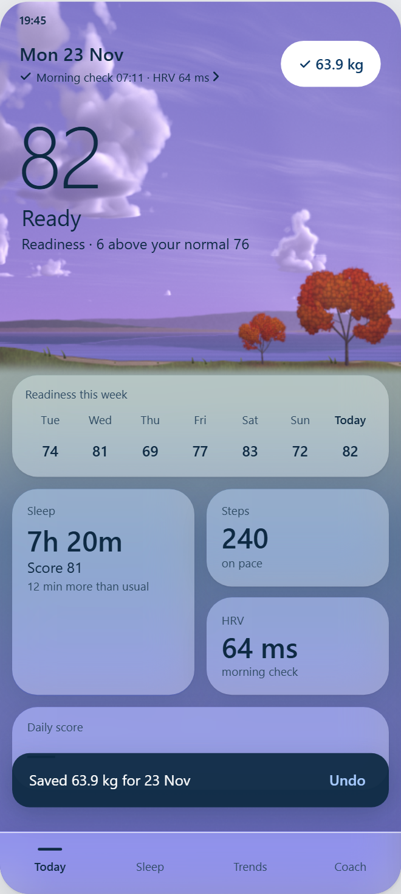
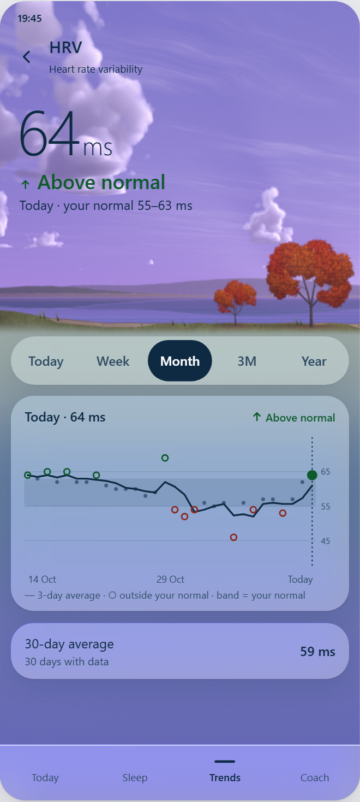
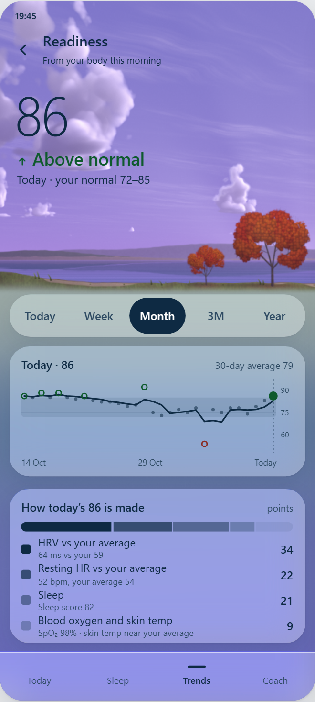
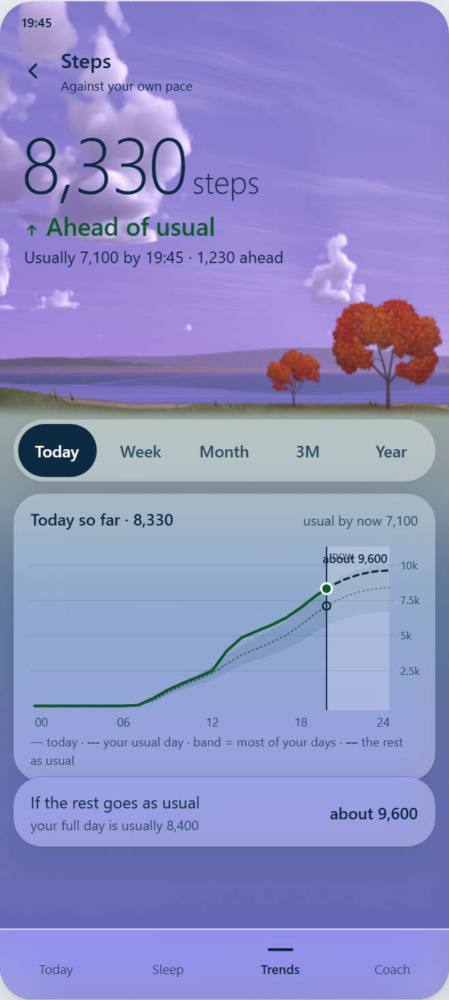
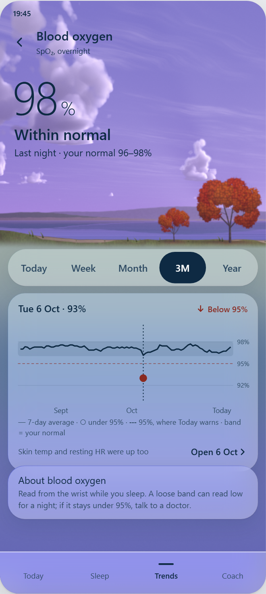